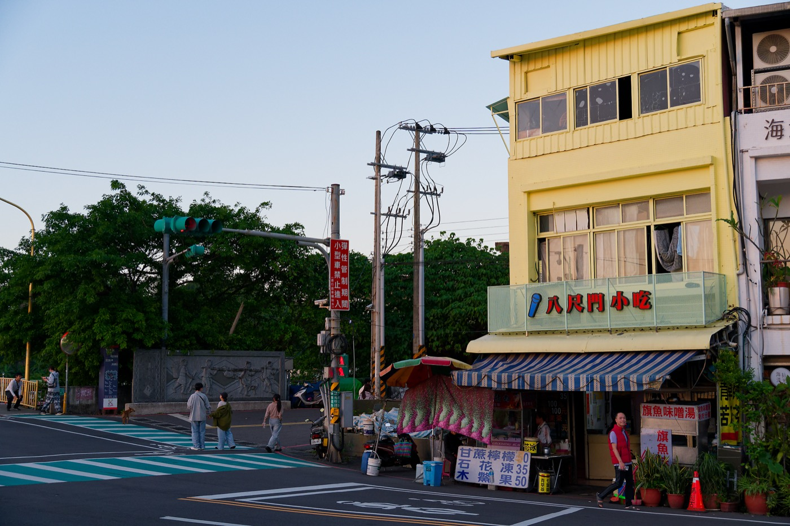
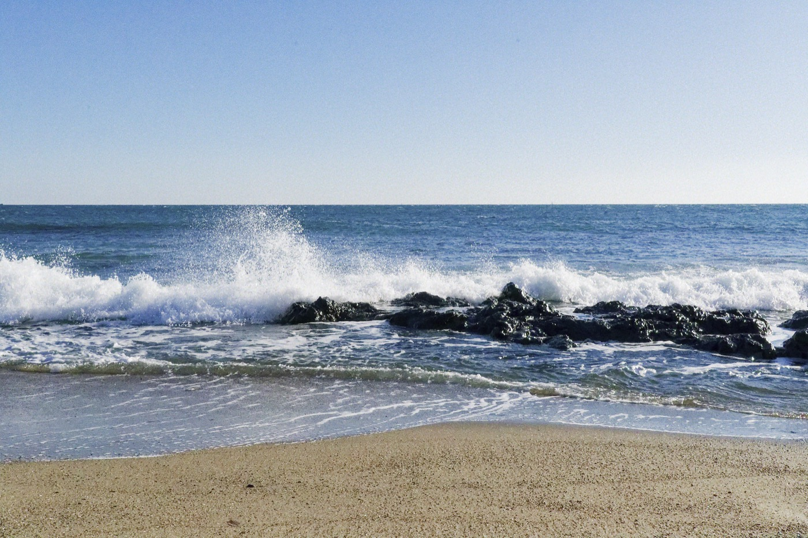

台湾に行ったことがない人に聞きたいんだけど、なんで行ってないの？ってくらい、台湾は良かった。近い、安い、飯がうまい、人が優しい。しかも写真映えする場所がそこら中にある。正直なめてた。ごめんなさい。
今回は4日間の旅。台北をベースに、基隆と平渓に足を伸ばした。
基隆・正濱漁港——この景色、反則じゃないですか
台北から電車で30分ほどの港町、基隆。その中にある「正濱漁港」に行きたくてたまらなかった。

港沿いに並ぶカラフルな建物と漁船。これが台湾の漁港の景色？おしゃれすぎない？もともとはただの古い港町だったのが、建物をカラフルに塗り直してからインスタで一気に有名になったらしい。でもそういう「映え」の演出感がなく、ちゃんと今も漁師が働いてる生きた港なのがいい。

夕方に来るのが正解だった。夕日が海に反射して、カラフルな建物がさらに映える。しばらくカメラ持ってうろうろしてたら、気づいたら1時間以上経ってた。
近くを歩くと、地元の人が普通に夕飯の準備をしてたり、子供が遊んでたりする。観光地化されてても、ちゃんと生活の匂いがする。そういう場所が好きだ。
台湾の街角をぶらぶら


基隆の街をぶらぶら歩いてたら、なんでもない路地の角がいい雰囲気を出してた。レトロな看板、電線、夕暮れの空。台湾って、意識しなくても画になる場所がそこら中にある。
タピオカはもちろん飲んだ。日本でブームになったのとは全然違う。甘さが控えめで、豆腐花とかを作ってる店の横でサクッと買える。値段も安い。これを毎日飲めるなんて羨ましすぎる。
台北・中正記念堂


台北市内の中正記念堂にも寄った。蒋介石を記念して建てられた巨大な建物で、広場がとにかく広い。堂の中には蒋介石の座像があって、衛兵が直立不動で守っている。
台湾の近現代史を少しかじってから行ったので、この像の前に立つといろんなことを考えた。「偉人」と「独裁者」、どちらとも言える人物の巨大な像の前で、観光客がみんな写真を撮ってる。歴史って複雑だ。
平渓・天燈祭り——この夜のことは一生忘れない
今回の旅でいちばん楽しみにしていたのが、平渓の天燈祭りだった。旧正月の時期に行われる、空に無数の灯籠を放つあのお祭り。

台北から山を越えてローカル線で行く平渓は、もともと炭鉱の町だった。今は灯籠祭りで有名になって、旧正月の夜だけ大勢の人が集まる。
真っ暗な夜空に、ひとつ、またひとつと灯籠が上がっていく。最初はポツポツだったのが、時間が経つにつれてどんどん増えていって、気づいたら空が橙色に染まってた。
隣にいた地元のおじさんが「この灯籠に願いを書いて飛ばすと叶うんだ」と身振り手振りで教えてくれた。言葉が通じなくてもこういうやりとりができるのが旅のいいところだと思う。
灯籠が夜空に消えていく瞬間、何か大事なものを手放すような、でも解放されるような、不思議な気持ちになった。これは実際に見ないとわからない感覚だと思う。
台湾の海

海岸にも足を伸ばした。岩に砕ける波の音を聞きながら、しばらく座って海を眺めてた。
台湾ってこんなに自然も豊かなんだ、と気づいたのがこのとき。山も海も温泉もある。また来る理由には困らない。
また来たい、すぐ来たい
4日間じゃ全然足りなかった。台南、高雄、花蓮、太魯閣……行けてないところだらけ。日本から近いのに、これほど「外国」を感じられる場所ってなかなかない。
次は1週間、できれば原付かレンタルバイクで走り回りたい。台湾一周って、できるのかな。絶対できる気がする。